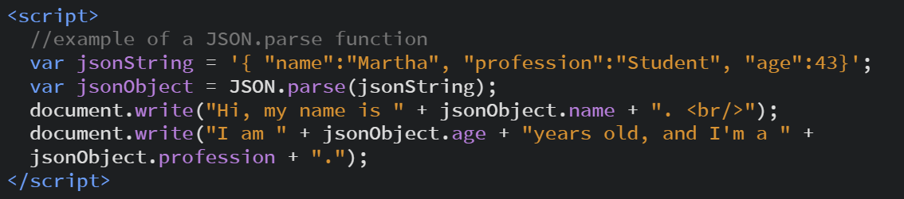

JSON exists in a string. It's format is like a JavaScript Object--it supports the same data types, like arrays, booleans, numbers--and of course--strings. Unlike JavaScript however, JSON contains only data types, no methods. Since JSON can contain huge amounts of data, unreadable by humans, we use JavaScript to make sense of it.
In my example, I use openweathermap.org to provide weather information which I call with JavaScript and display on a Weather Forecast page. But first, I want to talk about JSON parse and stringify. The JSON data is already in a string and I need to parse it in order to make sense of it. Here are a couple of examples of JSON.parse and JSON.stringify:
With JSON.parse you can convert JSON strings into JS Objects. In this example the variable jsonString creates a string which the variable jsonObject converts into an object with JSON.parse. Look at this code:

Here is the result:
The JSON.stringify function takes and objects values and casts them into a JSON string. It's the inverse of the JSON.parse function seen above. Check out this snippet here:

Here is the result:
Visit the Weather Forecast page to see JSON in action. Visit my JSON Weather at CodePen to see all the code behind the html.